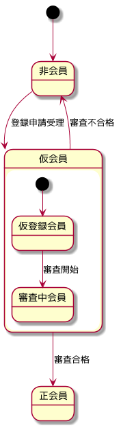

index
Table of Contents
1 PlantUML導入
1.1 環境
- Fedora release 22 (Twenty Two)
- GNU Emacs 24.5.1
1.3 plantuml donwload
dnf install plantuml
1.4 graphviz導入
dnf install graphviz
1.5 plantuml-mode導入
package-install plantuml-mode
1.6 org連携
~/.emacs.d/inits/44-plantuml.el
- 導入した plantuml.jarのパスの設定
- Babel連携設定
(setq org-plantuml-jar-path
(expand-file-name "/usr/share/java/plantuml.jar"))
(defun org-mode-init ()
(org-babel-do-load-languages
'org-babel-load-languages
(add-to-list 'org-babel-load-languages '(plantuml . t))))
(defun my-org-confirm-babel-evaluate (lang body)
(not (string= lang "plantuml"))) ; don't ask for plantuml
(setq org-confirm-babel-evaluate 'my-org-confirm-babel-evaluate)
(add-hook 'org-mode-hook 'org-mode-init)
1.7 Babel記載例
C-c C-e h o でhtmlに出力、imageディレクトリがあれば image/sequence.pngファイルも生成
2 Babel出力仕様
2.1 ファイルフォーマット指定
2.1.1 デフォルトはpng
2.1.2 -tformatオプションで指定
SVG指定例
#+BEGIN_SRC plantuml :file image/format.svg :cmdline -charset UTF-8 -tsvg
3 PlantUML作図
3.1 シーケンス図
3.1.1 Actor/Boundary/Control/Entity/Database
3.1.2 矢印の装飾と採番
3.1.3 グループ/ノート
3.1.4 スタイルを変える
3.2 ステートマシン図
3.2.1 開始状態・終了自体
3.2.2 複合状態

3.2.3 矢印方向の制御/注釈